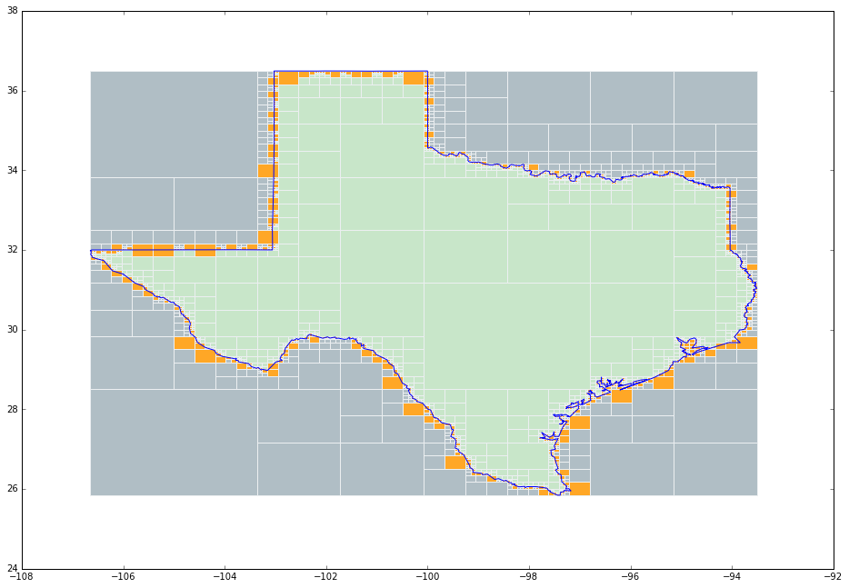
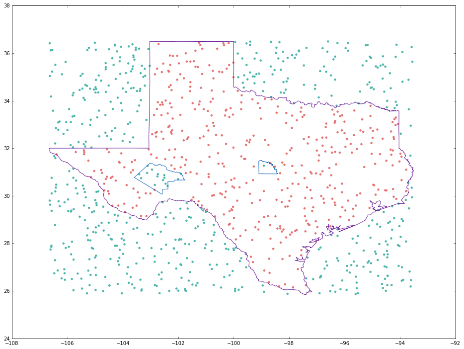
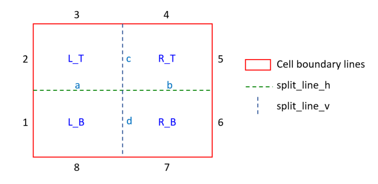
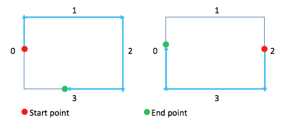
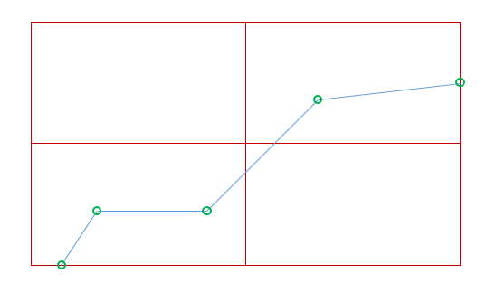

This page was generated from user-guide/geometry/fast_point_in_polygon_algorithm.ipynb.
Interactive online version:

# Fast Point in Polygon Testing Method¶
Author: Hu Shao shaohutiger@gmail.com
Content¶
Algorithm of building quadtree cells for study area
Introduction¶
This method is suitable for the situations where point numbers are huge, polygon numbers are small and polygon boundary is complex. E.g., simulation in point pattern analysis.
[ ]:
# Import essential libraries for following calculation
import numpy as np
from libpysal.cg.polygonQuadTreeStructure import QuadTreeStructureSingleRing
from libpysal.cg.shapes import Polygon, Ring
%matplotlib inline
# import codecs
# import shapely
# from pysal.cg.shapes import Polygon, Point
# from shapely.geometry import Polygon as spPolygon
# from shapely.geometry import Point as spPoint
# import time
import random
import time
import matplotlib
import matplotlib.pyplot as plt
print("import finished!")
import finished!
How to Use¶
Data preparing¶
[ ]:
def get_ring_from_file(path):
vertices = []
with open(path) as file:
for line in file:
if len(line) < 2:
continue
coordinates = line.split(",")
x = float(coordinates[0])
y = float(coordinates[1])
vertices.append((x, y))
return vertices
# Prepare the polygons for future use.
Texas = Polygon(get_ring_from_file("data/texas_points.txt"))
Pecos = Polygon(get_ring_from_file("data/pecos_points.txt"))
San_Saba = Polygon(get_ring_from_file("data/san_saba_points.txt"))
Texas_with_holes = Polygon(Texas.vertices, [Pecos.vertices, San_Saba.vertices])
[ ]:
# Build the quadtree structure
Texas.build_quad_tree_structure()
print("quad tree build finished")
# create some random point and test if these points locate in the polygon
for _ in range(0, 10):
x = random.uniform(Texas.bbox[0], Texas.bbox[2])
y = random.uniform(Texas.bbox[1], Texas.bbox[3])
print(x, y, Texas.contains_point([x, y]))
quad tree build finished
(-101.88926984960028, 33.54910494748045, True)
(-101.9324657625388, 30.99562838608417, True)
(-96.66509999476706, 31.769415333990857, True)
(-106.04482267119155, 29.30860980945098, False)
(-102.05124458612478, 28.377630545869593, False)
(-95.7952998307517, 33.2606998037955, True)
(-105.3043106118911, 29.64211319980175, False)
(-96.07086614456198, 36.43497839388729, False)
(-93.8102383176018, 35.720624066002756, False)
(-101.27867134062416, 31.762914510273433, True)
The process of building quadtree¶
Quadtree building process - visualize the building result¶
[ ]:
# The region of Texas, to make the steps more clear, here we only use the main region
texas_main_vertices = Texas.parts[0]
fig, ax = plt.subplots(figsize=(16, 11))
qts_singlering = QuadTreeStructureSingleRing(Ring(texas_main_vertices))
patches = []
color_array = []
cells_to_draw = [qts_singlering.root_cell]
while len(cells_to_draw) > 0:
cell = cells_to_draw.pop()
if cell.children_l_b is None:
# this is a leaf in the quad tree structure, draw it
verts = [
[cell.min_x, cell.min_y],
[cell.min_x, cell.min_y + cell.length_y],
[cell.min_x + cell.length_x, cell.min_y + cell.length_y],
[cell.min_x + cell.length_x, cell.min_y],
[cell.min_x, cell.min_y],
]
patches.append(verts)
if cell.status == "in":
color_array.append("#c8e6c9") # in color green
elif cell.status == "out":
color_array.append("#b0bec5") # in color grey
else: # means "maybe"
color_array.append("#ffa726") # in color orange
else:
cells_to_draw.append(cell.children_l_b)
cells_to_draw.append(cell.children_l_t)
cells_to_draw.append(cell.children_r_b)
cells_to_draw.append(cell.children_r_t)
coll = matplotlib.collections.PolyCollection(
np.array(patches), facecolors=color_array, edgecolors="#eceff1"
)
ax.add_collection(coll)
point_x_list = []
point_y_list = []
for point in texas_main_vertices:
point_x_list.append(point[0])
point_y_list.append(point[1])
plt.plot(point_x_list, point_y_list)
ax.autoscale_view()
plt.show()

Visualizing the result of “Point in Polygon” test¶
[ ]:
plt.figure(figsize=(16, 12))
for vertices in Texas_with_holes.parts:
line_x_list = []
line_y_list = []
for point in vertices:
line_x_list.append(point[0])
line_y_list.append(point[1])
plt.plot(line_x_list, line_y_list, c="#6a1b9a")
for vertices in Texas_with_holes.holes:
line_x_list = []
line_y_list = []
for point in vertices:
line_x_list.append(point[0])
line_y_list.append(point[1])
plt.plot(line_x_list, line_y_list, c="#1565c0")
point_x_list = []
point_y_list = []
point_colors = []
bbox = Texas_with_holes.bbox
for _ in range(0, 1000):
x = random.uniform(bbox[0], bbox[2])
y = random.uniform(bbox[1], bbox[3])
point_x_list.append(x)
point_y_list.append(y)
if Texas_with_holes.contains_point([x, y]):
point_colors.append("#e57373") # inside, red
else:
point_colors.append("#4db6ac") # outside, green
plt.scatter(point_x_list, point_y_list, c=point_colors, linewidth=0)
plt.show()

Test the performance of this quad-tree-structure¶
[ ]:
# construct a study area with 3000+ vertices
Huangshan = Polygon(get_ring_from_file("data/study_region_huangshan_point.txt"))
points = []
bbox = Huangshan.bounding_box
for _ in range(0, 10000):
x = random.uniform(bbox[0], bbox[2])
y = random.uniform(bbox[1], bbox[3])
points.append((x, y))
print(str(len(points)) + " random points generated")
print("------------------------------")
print("Begin test without quad-tree-structure")
time_begin = int(round(time.time() * 1000))
for point in points:
Huangshan.contains_point(point)
time_end = int(round(time.time() * 1000))
print(
"Test without quad-tree-structure finished, time used = "
+ str((time_end - time_begin) / 1000.0)
+ "s"
)
print("------------------------------")
print("Begin test with quad-tree-structure")
time_begin = int(round(time.time() * 1000))
Huangshan.build_quad_tree_structure()
count_error = 0
for point in points:
Huangshan.contains_point(point)
time_end = int(round(time.time() * 1000))
print(
"Test with quad-tree-structure finished, time used = "
+ str((time_end - time_begin) / 1000.0)
+ "s"
)
10000 random points generated
------------------------------
Begin test without quad-tree-structure
Test without quad-tree-structure finished, time used = 23.204s
------------------------------
Begin test with quad-tree-structure
Test with quad-tree-structure finished, time used = 0.451s
Validate the correctness of this quad-tree-structure¶
[ ]:
# polygons = ps.open("data/Huangshan_region.shp") # read the research region shape file
# research_region = polygons[0] # set the first polygon as research polygon
# len(research_region.vertices)
vertices = get_ring_from_file("data/study_region_huangshan_point.txt")
print("Study region read finished, with vertices of " + str(len(vertices)))
huangshan = Ring(vertices)
points = []
bbox = huangshan.bounding_box
for _ in range(0, 1000):
x = random.uniform(bbox[0], bbox[2])
y = random.uniform(bbox[1], bbox[3])
points.append([x, y, True])
print(str(len(points)) + " random points generated")
# First, test if these points are inside the polygon, record the result
for point in points:
is_in = huangshan.contains_point((point[0], point[1]))
point[2] = is_in
# Then, build the quad-tree and do the test again. Compare the results of two methods.
count_error = 0
huangshan.build_quad_tree_structure()
for point in points:
is_in = huangshan.contains_point((point[0], point[1]))
if point[2] != is_in:
print("Error found!!!")
count_error += 1
if count_error == 0:
print("finished ==================== no error found")
else:
print("finished ==================== ERROR FOUND")
Study region read finished, with vertices of 3891
1000 random points generated
finished ==================== no error found
Algorithm for building quadtree cells for study area¶
in: the point must be in the study area
out: the point must not be in the study area
maybe: decide if the points falls into the study area by some following-up calculation. However, the small polygon contains much less boundary segments, the calculation will be much easier. What’s more, this kind of grids only take over a very small part of the whole grids

Process of duadtree dividing of the study area:¶
Point order of the arcs MUST be clockwise
The two end-points of each arc MUST lie on the borders of the cell
When a arc goes in a cell, it MUST goes out from the same one
The intersection points MUST be lying on the inner-boundaries which are used to divide the cell into 4 sub-cells
Use the intersection points to split the arcs into small ones
No need to store cell boundaries as arcs, store the intersection points, points’ relative location from


In the situations that there are some arcs intersect with a cell and we need to extract the segment squence, here is the rule:
Start on the bottom-left point of the cell, go clockwise to search points.
Find the first arc-begin-point on the cell’s border. The actual segment sequence begin from here.
Go alone the arc until the end point on the border. Then go alone the cell’s border until find next arc-begin-point.
Repeat Step.3 until reach the first arc-begin-point at Step.2. Search stop.

situation_segment_intersect_with_two_split_line

Under the sitiation that a single segment intersects with both split-lines. This kind of situation should be carefully treated.